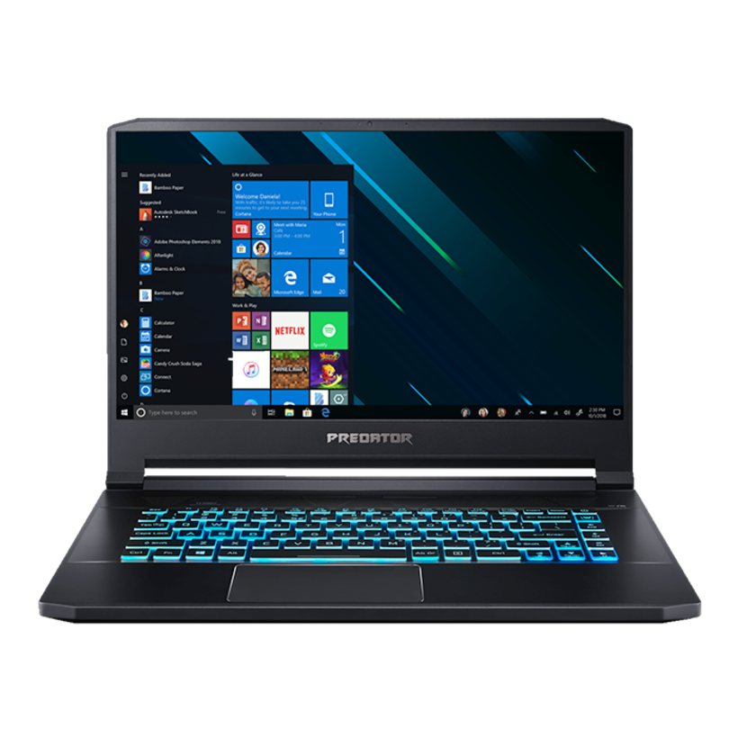
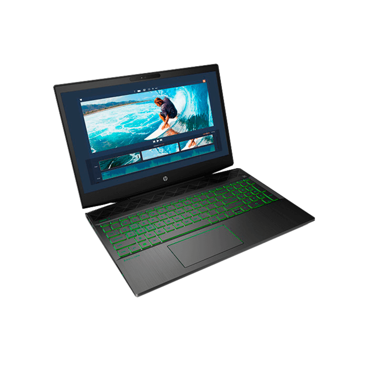

Se feliz sin importar lo que digan los demas.
Alumno : Noe Baltazar Canche Hoil
Lucha por lo que quieres
Porque es importante aprender el css
Aprenderlo seria bastante util para nosotros los programadores ya que con esto seria muy facil diseñar paginas web y realizarlas con cualquier software seria mucho mas facily asi usarlo en un empleo muy bien y comodo pero mas adelante cuando seria y teniendo practica
Pasos para aprender a programar.
Para empezar a programar seria bueno que cada persona aprenda la importancia y asi pueda usarlo a su favor para que se le facilite el aprendizaje, Bueno como punto importante debemos tomar varios cursos en donde podamos emplearnos con maestros que sepan bastante sobre este tema.
Por que es importante el software al prgramar .
Se conoce como software al soporte lógico al sistema formal de un sistema informático es importante al programar porque usaremos apps como visual studio code y otras importantes aplicaciones.
Ejemplo de algunas Computadoras modernas .
 Frases para inspirarte a estudiar .
1.- Siempre parece imposible hasta que se hace.
2.- La motivación es lo que te pone en marcha, el hábito es lo que hace que sigas
3.- Estudia el pasado si quieres intuir el futuro
4.- Si no te gusta cómo son las cosas, cámbialas.
5.- He fallado una y otra vez a lo largo de mi vida. Es por eso por lo que he tenido éxito.
Datos.
Nombre: Noe Baltazar Canche Hoil .
Edad: 16 años.
Fecha de nacimiento: 11 de Mayo del 2005.
Carrera: informatica